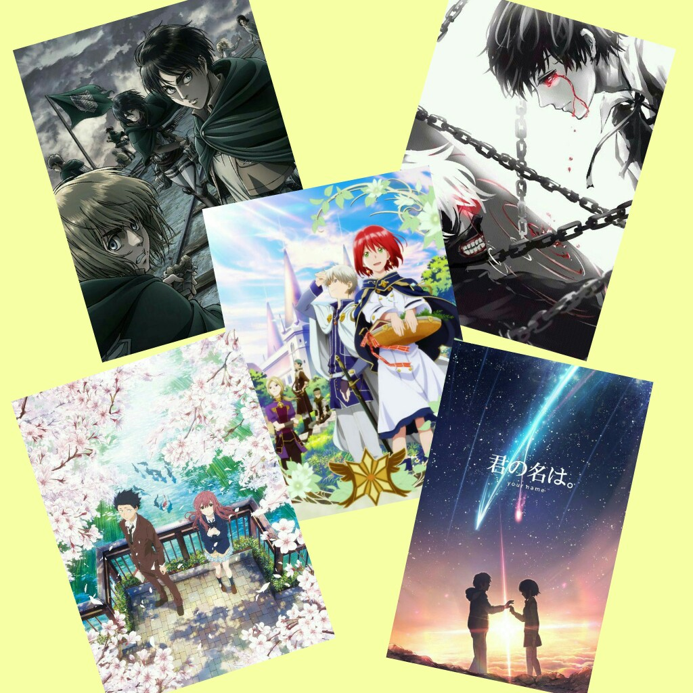

- I also like creating crafts using materials found in the house. Though I started doing it for projects in school, I learned to enjoy it as time pass by. The picture on the side is a pen holder made from the core of the tissue paper.
- I also like creating crafts using materials found in the house. Though I started doing it for projects in school, I learned to enjoy it as time pass by. The picture on the side is a pen holder made from the core of the tissue paper.Likes & Hobbies
- I like sketching and painting. The pictures on the side are some of my artworks I’ve done in the past years. I started taking interest in drawing when I was in high school and my first artworks are anime fan arts. Now, I’m studying the art of painting using watercolor to improve my artistic side.
- I also like creating crafts using materials found in the house. Though I started doing it for projects in school, I learned to enjoy it as time pass by. The picture on the side is a pen holder made from the core of the tissue paper.
- Collecting stationary/letter set is a hobby I share with my sisters. They started it back in their elementary days and now, it’s my turn to collect new designs. To see variety of colors and smell flowery scent in the paper may be the reason why we collect these letter sets.
- Though most of my hobbies involve art, I also like solving different kinds of puzzles. I love brain teasers and logic particularly.
 - I also love reading books. I like exploring different genres in English and Filipino literature, but most of my favorite books are those with cliffhanger or great plot twist. The reason why is because this stories evokes my feeling of astonishment or annoyance which create a great impact in my memory bank.
- I also love reading books. I like exploring different genres in English and Filipino literature, but most of my favorite books are those with cliffhanger or great plot twist. The reason why is because this stories evokes my feeling of astonishment or annoyance which create a great impact in my memory bank.
 - Manga and anime is also my thing. I started drawing because of anime, so I can say that this interest of mine is way much longer than my other hobbies as I watch anime even as a child. Some of my favorite series and movies are: Kimi no Nawa, Akagami no Shirayukihime, Tokyo ghoul, Attack on Titan, Fairy tail and many more.
- The K-wave also hit me back in 2010, but I started taking full interest during my college days. The Korean culture influenced me to watch k-drama, try k-fashion and cosmetics, eat Korean foods, and many more. But the most special thing of all is their music. I like kpop because of the catchy tone, cool dance choreography, and good looking singers/idols with great personalities.
- Last but not the least, I love singing. I’m not the best in this field, but singing gives me joy and happiness. It helps me calm down in most situation and it serves as my bonding moment with my friends.